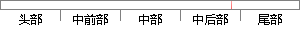

训练每个人的语音到语音库中，每次选择其中个语音样本进行识别，看能否确认这个语音样本是否属于他本人。
片段位置图

相似结果|
相似片段 1：，表示被测试人与样本人不符合。每个人训练三次，每次的语音内容相同。在进行检验材料的测试之前，先对样本中的语音进行验证。由于本验证方法采用的是文本相关的说话人确认方法，要求训练语音内容与测试语音内容～致
|
※ 片段修改建议 ※
近似词参考：- 训练：练习
- 其中：此中 个中
- 进行：举行
- 识别：辨认
- 能否：可否
- 是否：是不是
系统自动生成语句：练习每个人的语音到语音库中，每次选择此中个语音样本举行辨认，看可否确认这个语音样本是不是属于他本人。
注：本片段修改建议为系统自动生成，仅供参考。